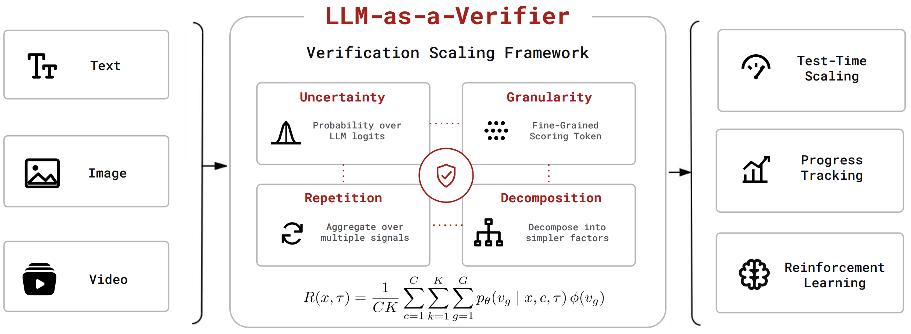

Quick Start: Best-of-N Selection#
This page shows the most common way to use LLM-as-a-Verifier: given a task and a pool of N agent trajectories, pick the best one in a few lines of code.
{kind=link}

The key idea is simple:
Use fine-grained scoring granularity (e.g., 1–20 instead of the standard 1–5 scale).
Take the expectation over the full logprob distribution of the score tokens.
Scale repeated evaluation and criteria decomposition.
The resulting fine-grained feedback can be used for test-time scaling, progress tracking, and reinforcement learning.
Select the best of N agent trajectories#
import llm_verifier
problem = "Fix the failing test in utils.py."
trajectories = [traj_1, traj_2, traj_3, traj_4, traj_5] # N trajectories
result = llm_verifier.select(
problem=problem,
candidates=trajectories,
criteria={"Root cause": "Did the agent fix the real cause?",
"Verification": "Did the agent confirm the fix?"},
model="gemini-2.5-flash", # verifier model (needs VERTEX_API_KEY for logprobs)
n_evaluations=4, # repeated evaluations per criterion
pivots=2, # pivots < N; reduced verification cost
)
print("Best trajectory:", result.index) # result.best is the trajectory itself
print("Ranking:", result.ranking) # all trajectories, best-first
Under the hood, select runs the Probabilistic Pivot Tournament to rank all N trajectories using O(Nk²) pairwise verifications instead of a full O(N²) round-robin.
pivots trades cost for accuracy: more pivots = more comparisons = higher accuracy.
Key arguments#
criteria: a bundled benchmark name (e.g."swe_bench"), a path to a*.mdcriteria file, a{name: description}dict, or a list of strings. See Writing Verifier Criteria.n_evaluations: repeated verificationsKper criterion. AveragingKindependent evaluations reduces per-pass noise; accuracy grows withK.pivots: the number of pivotskin the tournament. Keepksmall relative toN— cost grows asO(Nk²), andk ≥ Ndegenerates to a full round-robin.seed: identical inputs with the same seed run the identical tournament.cache: optional path to a JSON score cache. Re-running with the same cache re-scores only comparisons not seen before.max_workers: concurrency for verifier calls (default 50).
Interpret the result#
select returns a VerifierResult:
result.index # index of the winning trajectory in the input list
result.best # the winning trajectory itself
result.scores # per-trajectory mean preference (w_i / c_i) from the tournament
result.ranking # trajectory indices sorted best-first
result.n_comparisons # number of directed verifier comparisons that were run
result.criteria # the criterion ids used for scoring
Error handling#
By default a failed verifier call scores that comparison 0.5/0.5 (a tie for this run only — never persisted to the cache).
Pass on_error="raise" to re-raise instead:
result = llm_verifier.select(problem, trajectories,
criteria="swe_bench", on_error="raise")
Tip
select shows a progress bar when stderr is an interactive terminal and stays silent in servers or pipelines. Override with progress=True / progress=False.